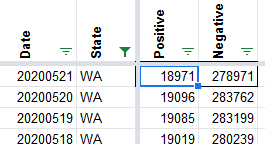
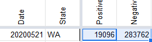

WA 5/18 New Cases appear as negative
Issue number 440
muamichali opened this issue on May 21, 2020 at 10:55 am
This is probably created by a historical data patch since WA regularly revises their data.
Front External Support Ticket; https://app.frontapp.com/open/cnv_82j3yoh
The data for Washington State on 5/18 - your data shows negative cases - and negative increases in positive cases.
Is there a way you can correct your data?
Related Issue: https://github.com/COVID19Tracking/issues/issues/424
I did another historical data patch for WA today based on the information in page 5 of their dashboard. They are currently reporting only tests performed up to 5/20 11:59PM
I adjusted yesterday’s number to prevent negative case numbers to the same as 5/20 BEFORE 
AFTER 
All the information including the raw JSON from WA DOH website is available here https://docs.google.com/spreadsheets/d/e/2PACX-1vTrTN4ZhOJo_DORpyHkTCNNL6-Ko_VQ0iI1qkYjlhL_MtxOWygRMRfsLtL-VY0d8uiFBNoeee7v3F8G/pubhtml